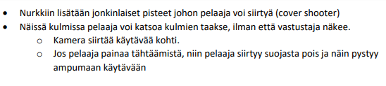
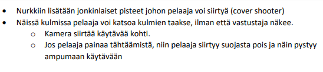

2D-elementit ja 3D-mallinnus
Suurin osa 3D-malleista joita tein on pienempi채 "assetteja" joita ripotellaan kent채lle koristamaan ja
luomaan immersiota maailmaan. N채ihin lukeutuu mm. pahvilaatikot, matot, t철lkit, lamput, ilmanvaihtokanavat ja muut
vastaavanlaiset arkip채iv채isemm채t objektit. Osasin k채sitell채 Blenderi채 joten kuten ennen kuin aloitimme projektin, mutta
osaamiseni Blenderin kanssa on parantunut huomattavasti -- ty철n tekeminen on nopeampaa ja sulavampaa. Olen oppinut sek채 uusien
ty철kalujen ett채 sis채채nrakennettujen muuttujien k채ytt채mist채. Suurimpana oppina n채kisin kuitenkin materiaalien ja
tektuurien tekemisen sek채 niiden "bakeemisen" malliin. Ennen projektia ei malleissani oikein ollut mit채채n
muuta kuin mattav채rej채, nyt osaan luoda proseduraalista ruostetta, puulle ominaista kuviota tai vaikka asfaltille
kuuluvaa kivist채 tekstuuria.
Ohessa on ensimm채isi채 yrityksi채 UV-wrappingin ja teksturoinnin kanssa.
Tein kaiken kaikkiaan yli 20 - 30 pienemp채채 assettia, joista osaan tein itse tekstuurit ja osiin en. Alapuolella on
simppelimp채채 assettia johon tein v채rit sek채 kaikki muodot, vain tekstuurit puuttuu.

Hahmomallinnukseen en koskenut en채채 projektin aloittamisen j채lkeen. K채ytimme projektissa minun alkuper채ist채
hahmoa mallina josta l채htisimme eteenp채in. Hahmoni ei sopinut tyylilt채채n lopulliseen peliin, joten vaihdoimme mallin
sittemin kokonaan toisenlaiseen tyyliin.

Otin osaa my철s 2D-elementtien toteutukseen kuten suunnitteluunkin. Suunnittelin ja sittemmin toteutin
k채ytt철liittym채n teeman sek채 grafiikat. Tein yksitt채iset elementit Photoshopissa jossa splice ty철kalun avulla
saimme kaikki osat erikseen jotka sitten lis채ttiin Unityyn, jossa loimme varjot tietyille objekteille joten pystyimme huijaamaan
elementit n채ytt채m채채n 3D-malleilta.
Huomio, hahmo keskell채 ei ole minun mallintama

Tein my철s jonkin verran sketsej채 ja suunnitelmia aseista, hahmoista ja asseteista. Ohessa muutamat ideat jotka tein


 
